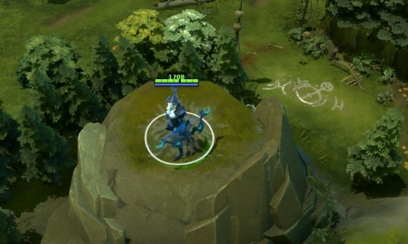

卓尔游侠
背景故事
卓尔游侠名叫崔希丝，这个名字很适合矮小、有点像侏儒、令人生厌的卓尔人。但崔希丝并不是卓尔人。她的双亲在坐大篷车旅行时受到土匪的袭击，滥杀无辜的土匪激怒了附近爱好和平的卓尔人。战斗结束后，卓尔人发现了一个藏在马车残骸中的小女孩，他们一致同意不能让这个失去父母的孩子被抛弃。还是孩童时，崔希丝就展现出了她对那些卓尔人引以为傲的技术的天赋：隐秘、沉默、敏锐。如果不看身体，在精神上她就像一个被拐走后又回到自己真正家中的卓尔人孩童。但随着她的成长，她的个头比她的家人高了不少，她因此认为自己是个丑陋的卓尔人。即使她皮肤光滑且长的匀称，完全没有卓尔人的肉疣和粗糙的髯须。与收养她的部族疏远后，她独自居住在森林中。许多在森林中寻路的旅行者都说他们见过一个美丽得难以置信的游侠在树林深处凝视他们，而当他们试图接近时，她又消失的无影无踪。轻盈、隐秘的冷美人，她像无声的迷雾般移动。你听到的森林低语，其实是她命中敌人心脏的霜冻箭矢的破空之声。
减速的持续时间在下一支冰箭射中后刷新。 魔法消耗：12/12/12/1
冷却时间：0.0/0.0/0.
|
狂风 魔法消耗：90
冷却时间：13
|
精准光环 提高所有友方远程英雄的攻击力，提升数值是卓尔游侠敏捷值的一定百分比。施放后对所有非英雄单位生效，持续30秒。 魔法消耗：0
冷却时间：100
|
 射手天赋 射手天赋卓尔游侠的战斗经验提高了她的精确度和战斗效率，被动增加敏捷。如果400范围内有敌方英雄，敏捷加成消失。可用神杖升级。 魔法消耗：0
冷却时间：0
|
 霜冻之箭
霜冻之箭